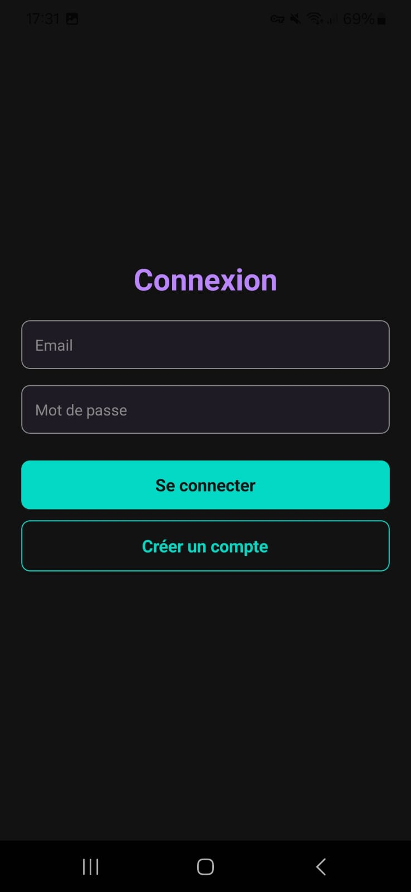

Mes projets
-
Réalisation d’un escape game mobile en équipe dans le cadre d’un projet scolaire d’un mois à l’IUT. Nous avons conçu de A à Z un jeu immersif basé sur une enquête de meurtre avec 6 suspects. Le joueur résout une dizaine d’énigmes variées pour innocenter les suspects et identifier le coupable, en exploitant les capteurs du téléphone (gyroscope, accéléromètre, micro, etc.). J’ai participé à la conception du scénario, des énigmes, et au développement en React Native, incluant un faux téléphone avec reconnaissance vocale, un chatbot pour indices, et une gestion de comptes avec sauvegarde de progression.
Énigmes développées :
Chatbot interactif fournissant des indices via reconnaissance textuelle.

Faux téléphone pour appeler un suspect, avec reconnaissance vocale déclenchant des réponses selon des mots-clés.
Boussole orientée en inclinant le téléphone dans différentes directions via le gyroscope.
Piano virtuel où il faut rejouer une partition à l’oreille.
Tangram interactif à résoudre sur l’écran tactile.
Code binaire affiché après secouage du téléphone, à décoder pour trouver un numéro de salle.
Technologies :
- React Native
- Android Studio
- JavaScript
- Reconnaissance vocale
- Capteurs (gyroscope, accéléromètre)
Statut : Projet scolaire (prototype non publié, réalisé en équipe).
-
Développement d’une application mobile dans le cadre d’un projet scolaire. L’application permet de gérer un jardin partagé en visualisant les parcelles, leurs cultures et leur état. Chaque parcelle est représentée avec un code couleur (vert pour prêt à récolter, rouge pour en pousse, marron pour les chemins) et affiche une image du légume planté. En cliquant sur une parcelle, l’utilisateur peut modifier le légume, son statut, et consulter la date du dernier arrosage. Un bouton permet de marquer une parcelle comme arrosée. J’ai contribué à la conception de l’interface et à la logique de gestion des parcelles.
Captures d’écran :
Vue d’ensemble du jardin avec les parcelles, chemins, et codes couleur.
Détail d’une parcelle, permettant de modifier le légume, le statut, et de marquer l’arrosage.
Technologies :
- Android Studio
- Java
- XML (UI)
Statut : Projet scolaire (prototype non publié, réalisé en équipe de 2).
-
Développement d’une application mobile e-commerce en React Native dans le cadre d’un projet scolaire. TroDraule permet d’acheter des mèmes drôles via une interface optimisée pour smartphones. Connectée à Firebase pour l’authentification et la gestion des données, l’application offre des fonctionnalités classiques d’e-commerce : consultation des mèmes avec filtres (Tout, Drôle, Pas Drôle, Ça passe), ajout au panier, favoris, profil utilisateur avec historique des commandes, et commande fictive via un bouton “Payer par la pensée”. J’ai contribué à la conception de l’interface, à l’intégration de Firebase, et à la logique des interactions (panier, favoris).
Captures d’écran :
Page de connexion avec création de compte, gérée via Firebase Authentication.
Page d’accueil affichant tous les mèmes avec filtres (Tout, Drôle, Pas Drôle, Ça passe).
Détail d’un mème avec options pour ajouter au panier ou mettre en favoris.
Page profil avec infos utilisateur, mèmes favoris, historique des commandes, et déconnexion.
Page panier pour consulter les mèmes, les supprimer, et passer commande.
Technologies :
- React Native
- Android Studio
- JavaScript
- Firebase (Authentication, Firestore)
Statut : Projet scolaire (prototype non publié, réalisé en équipe).
-
Création de mon portfolio personnel sous forme d’une expérience interactive en 3D. Le site utilise Three.js pour une scène 3D immersive où un personnage animé (un renard) navigue sur une route avec des panneaux menant à des sections (À propos, Projets, Contact). J’ai modélisé le personnage, les lampadaires, et le décor dans Blender, réalisant ma première animation de personnage avec rigging et squelette. J’ai également géré la diffusion de la lumière des lampadaires via Three.js pour un rendu nocturne réaliste. Le portfolio intègre un formulaire de contact avec EmailJS et des animations CSS pour une interface moderne.
Captures d’écran :
Personnage renard modélisé et animé dans Blender, avec rigging et squelette pour ma première animation.
Décor 3D avec tout les petits élément comme les fleurs, les souches, les arbres, etc...
Technologies :
- JavaScript
- Three.js
- Blender
- HTML/CSS
- EmailJS
Statut : Projet personnel (en ligne, 2024).